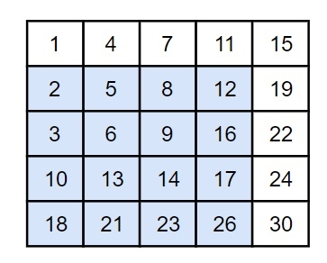
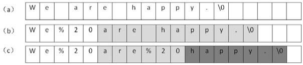
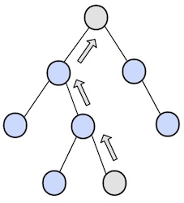

剑指Offer¶
1. 前言¶
本文的绘图可通过以下途径免费获得并使用：
2. 实现 Singleton¶
3. 数组中重复的数字¶
在一个长度为n的数组里的所有数字都在0到n-1的范围内。数组中某些数字是重复的，但不知道有几个数字是重复的，也不知道每个数字重复几次。请找出数组中任意一个重复的数字。例如，如果输入长度为7的数组[2,3,1,0,2,5,3]，那么对应的输出是第一个重复的数字2。
解决这个问题的一个简单的方法是先把输入的数组排序。然后从头到尾扫描数组，找出重复的数字。或者利用哈希表，每扫到一个数字的时候，都可以用O(1)的时间来判断哈希表里是否已经包含了该数字。如果哈希表里还没有这个数字，就把它加入哈希表，否则，就找到一个重复的数字。
有没有更好的方法呢？要求时间复杂度O(N)，空间复杂度O(1)。因此不能使用排序的方法，也不能使用额外的标记数组。
注意到数组中的数字都在0\sim n-1的范围内。如果这个数组中没有重复的数字，那么当数组排序之后数字i将出现在下标为i的位置。所以可以将值为i的元素调整到第i个位置上。
以 (2, 3, 1, 0, 2, 5) 为例：
position-0 : (2,3,1,0,2,5) // 2 <-> 1
(1,3,2,0,2,5) // 1 <-> 3
(3,1,2,0,2,5) // 3 <-> 0
(0,1,2,3,2,5) // already in position
position-1 : (0,1,2,3,2,5) // already in position
position-2 : (0,1,2,3,2,5) // already in position
position-3 : (0,1,2,3,2,5) // already in position
position-4 : (0,1,2,3,2,5) // nums[i] == nums[nums[i]], exit
遍历到位置 4 时，该位置上的数为 2，但是第 2 个位置上已经有一个 2 的值了，因此可以知道 2 重复。
public boolean duplicate(int[] nums, int length, int[] duplication) { if (nums == null || length <= 0) return false; for (int i = 0; i < length; i++) { while (nums[i] != i) { if (nums[i] == nums[nums[i]]) { duplication[0] = nums[i]; return true; } swap(nums, i, nums[i]); } } return false; } private void swap(int[] nums, int i, int j) { int t = nums[i]; nums[i] = nums[j]; nums[j] = t; }
3. 二维数组中的查找¶
在一个二维数组中，每一行都按照从左到右递增的顺序排序，每一列都按照从上到下递增的顺序排序。请完成一个函数，输入这样的一个二维数组和一个整数，判断数组中是否含有该整数。
Consider the following matrix: [ [1, 4, 7, 11, 15], [2, 5, 8, 12, 19], [3, 6, 9, 16, 22], [10, 13, 14, 17, 24], [18, 21, 23, 26, 30] ] Given target = 5, return true. Given target = 20, return false.
首先选取数组中右上角的数字。
- 如果该数字等于要查找的数字，查找过程结束：
- 如果该数字大于要查找的数字，剔除这个数字所在的列; 如果该数字小于要查找的数字，剔除这个数字所在的行。也就是说如果要查找的数字不在数组的右上角，则每－次都在数组的查找范围中剔除）行或者一列，这样每一步都可以缩小.
- 查找的范围，直到找到要查找的数字，或者查找范围为空。
时间复杂度：O(M + N) + O(1)
当前元素的查找区间为左下角的所有元素，例如元素12的查找区间如下：

public boolean Find(int target, int [][] array) { if (array == null || array.length == 0 || array[0].length == 0) return false; int row = 0, col = array[0].length - 1; while (row < array.length && col >= 0) { int cmp = array[row][col] - target; if (cmp > 0) col--; else if (cmp < 0) row++; else return true; } return false; }
4. 替换空格¶
请实现一个函数，将一个字符串中的每个空格替换成“%20”。例如，当字符串为"We Are Happy". 则经过替换之后的字符串"为We%20Are%20Happy"。
Note
在⽹络编程中，如果URL参数中含有特殊字符，如空格、'#'等，可能导致服务器端⽆法获得正确的参数值。我们需要将这些特殊符号转换成服务器可以识别的字符。转换的规则是在'%'后⾯跟上ASCII码的两位⼗六进制的表⽰。⽐如空格的ASCII码是32，即⼗六进制的0x20，因此空格被替换成"%20"。再⽐如'#'的ASCII码为35，即⼗六进制的0x23，它在URL中被替换为"%23"。
最直观的做法是从头到尾扫描字符串，每次碰到空格字符的时候进行替换。由于是把1个字符替换成3个字符，我们必须要把空格后面的字符都后移2个字节，否则就有两个字符被覆盖了。
从前往后把字符串"We are happy."中的空格替换成"%20"的过程。灰色背景表示需要移动的字符。 
public String replaceSpace(StringBuffer str) { if (str == null || str.length() == 0) return ""; for (int i = 0; i < str.length(); i++) if (str.charAt(i) == ' ') { str.setCharAt(i, '%'); str.insert(i + 1, "20"); i += 2; } return str.toString(); }
假设字符串的长度是n。对每个空格字符，需要移动后面O(n)个字符，因此对于含有n个字符的字符串而言，最坏时间复杂度是O(n^2)。
能不能减少移动次数呢？答案是肯定的，把从前向后替换改成从后向前替换。可以先遍历一次字符串，统计出字符串中空格的综述，计算出替换之后的字符串长度 = n + 2 \times 空格数。
在字符串尾部填充任意字符，使得字符串的长度等于替换之后的长度。因为一个空格要替换成三个字符（%20），因此当遍历到一个空格时，需要在尾部填充两个任意字符。准备两个指针，P1和P2，P1指向原始字符串的末尾，而P2指向替换之后的字符串的末尾.接下来我们向前移动指针P1，逐个把它指向的字符复制到P2指向的位置，直到碰到空格为止，此时把P1向前移动1格，并在P2之前插入字符串"%20",然后向前移动3格。重复此过程，直到P1和P2指向同一位置，表明所有空格都已经替换完毕。

由于所有的字符都指复制/移动一次，因此时间复杂度是O(n)。
public String replaceSpace(StringBuffer str) { if (str == null || str.length() == 0) return ""; // 获取空格的数量 int n = str.length(); int numOfSpace = 0; for (int i = 0; i < n; i++) if (str.charAt(i) == ' ') numOfSpace++; // 插入空格 int newStringLength = n + 2 * numOfSpace; // 新字符串长度 str.setLength(newStringLength); // 扩充字符串 int p1 = n - 1, p2 = str.length() - 1; // p1指向旧字符串，p2指向新字符串 while (p1 != p2) { if (str.charAt(p1) != ' ') str.setCharAt(p2--, str.charAt(p1)); else { str.setCharAt(p2--, '0'); str.setCharAt(p2--, '2'); str.setCharAt(p2--, '%'); } p1--; } return str.toString(); }
5. 从尾到头打印链表¶
输入链表的第一个节点，从尾到头反过来打印出每个结点的值。链表结点定义如下：
public class ListNode { int val; ListNode next = null; ListNode(int val) { this.val = val; } }
我们想到解决这个问题肯定要遍历链表。遍历的顺序是从头到尾的顺序，可输出的顺序却是从尾到头。也就是说第⼀个遍历到的结点最后⼀个输出，⽽最后⼀个遍历到的结点第⼀个输出。这就是典型的“后进先出”，我们可以⽤栈实现这种顺序。每经过⼀个结点的时候，把该结点放到⼀个栈中。当遍历完整个链表后，再从栈顶开始逐个输出结点的值，此时输出的结点的顺序已经反转过来了。
public ArrayList<Integer> printListFromTailToHead(ListNode listNode) { if (listNode == null) return new ArrayList Stack<Integer> stack = new Stack<>(); while (listNode != null) { stack.add(listNode.val); listNode = listNode.next; } ArrayList<Integer> ret = new ArrayList<>(); while (!stack.isEmpty()) res.add(stack.pop()); return res; }
既然想到了⽤栈来实现这个函数，⽽递归在本质上就是⼀个栈结构， 于是很⾃然地又想到了⽤递归来实现。要实现反过来输出链表，我们每访问到⼀个结点的时候，先递归输出它后⾯的结点，再输出该结点⾃⾝，这样链表的输出结果就反过来了。
public ArrayList<Integer> printListFromTailToHead(ListNode listNode) { ArrayList<Integer> list = new ArrayList<>(); printListFromTailToHead(list, listNode); return list; } private void printListFromTailToHead(ArrayList<Integer> list, ListNode listNode) { if (listNode == null) return; printListFromTailToHead(list, listNode.next); list.add(listNode.val); }
也可以利用ArrayList.addAll()，而省去了辅助函数：
public ArrayList<Integer> printListFromTailToHead(ListNode listNode) { ArrayList<Integer> list = new ArrayList<>(); if (listNode == null) return list; list.addAll(printListFromTailToHead(listNode.next)); list.add(listNode.val); return list; }
虽然上⾯的基于递归的代码看起来很简洁，但有个问题：当链表⾮常长的时候，就会导致函数调⽤的层级很深，从⽽有可能导致函数调⽤栈溢出。 显式⽤栈基于循环实现的代码的鲁棒性要好⼀些。
顺序遍历链表，获取链表节点的值，然后反转。
public ArrayList<Integer> printListFromTailToHead(ListNode listNode) { ArrayList<Integer> res = new ArrayList<>(); while (listNode != null) { res.add(listNode.val); listNode = listNode.next; } Collections.reverse(res); return res; }
6. 重建二叉树¶
根据二叉树的前序遍历和中序遍历的结果，重建出该二叉树。假设输入的前序遍历和中序遍历的结果中都不含重复的数字。
preorder = [3,9,20,15,7] inorder = [9,3,15,20,7]

8. 二叉树的下一个结点¶
给定一个二叉树和其中的一个结点，请找出中序遍历顺序的下一个结点并且返回。注意，树中的结点不仅包含左右子结点，同时包含指向父结点的指针。
public class TreeLinkNode { int val; TreeLinkNode left = null; TreeLinkNode right = null; TreeLinkNode next = null; TreeLinkNode(int val) { this.val = val; } }
① 如果一个节点的右子树不为空，那么该节点的下一个节点是右子树的最左节点；

② 否则，向上找第一个左链接指向的树包含该节点的祖先节点。

public TreeLinkNode GetNext(TreeLinkNode root){ if (root == null) return null; // 右子树的最左节点 if (root.right != null) { root = root.right; while (root.left != null) root = root.left; return root; } // 第一个左链接指向的树包含左子树 TreeLinkNode parent = root.next; while(parent != null && root != parent.left) { root = parent; parent = root.next; } return parent; }
7. 用两个栈实现队列¶
用两个栈来实现一个队列，完成队列的Push和Pop操作。
in栈用来处理入栈(push)操作，out栈用来处理出栈(pop)操作。一个元素进入 in栈之后，出栈的顺序被反转。当元素要出栈时，需要先进入out栈，此时元素出栈顺序再一次被反转，因此出栈顺序就和最开始入栈顺序是相同的，先进入的元素先退出，这就是队列的顺序。
当out中不为空时，在out中的栈顶元素是最先进⼊队列的元素，可以弹出。如果 out为空时，我们把in中的元素逐个弹出并压⼊out。由于先进⼊队列的元素被压到in的底端，经过弹出和压⼊之后就处于out的顶端了，又可以直接弹出。

public class Queue { Stack<Integer> in = new Stack<Integer>(); Stack<Integer> out = new Stack<Integer>(); public void push(int node) { in.push(node); } public int pop() throws Exception { if (out.isEmpty()) while (!in.isEmpty()) out.push(in.pop()); if (out.isEmpty()) throw new Exception("Queue is Empty!"); return out.pop(); } }
8. 旋转数组的最小数字¶
把一个数组最开始的若干个元素搬到数组的末尾，我们称之为数组的旋转。 输入一个非减排序的数组的一个旋转，输出旋转数组的最小元素。 例如数组{3,4,5,1,2}为{1,2,3,4,5}的一个旋转，该数组的最小值为1。 NOTE：给出的所有元素都大于0，若数组大小为0，请返回0。
如果数组元素允许重复的话，那么就会出现一个特殊的情况：nums[lo] = nums[mid] = nums[hi]，那么此时无法确定解在哪个区间，需要切换到顺序查找。例如对于数组 {1,1,1,0,1}，lo、mid和hi指向的数都为1，此时无法知道最小数字0在哪个区间。
public int minNumberInRotateArray(int [] nums) { if (nums == null || nums.length == 0) return 0; int lo = 0, hi = nums.length - 1, mid; while (lo < hi) { // 取中间的位置 mid = lo + (hi - lo) / 2; // 如果三个数都相等，则需要进行顺序处理，从头到尾找最小的值 if (nums[mid] == nums[hi] && nums[mid] == nums[lo]) return findMin(nums, lo , hi); // 如果中间位置对应的值在后一个排好序的部分，将hi设置为新的处理位置 else if (nums[mid] > nums[hi]) lo = mid + 1; else hi = mid; // 不是 hi = mid - 1; } return nums[lo]; } // 找数组中的最小值 private int findMin(int[] nums, int lo, int hi) { int min = nums[lo]; for (int i = lo + 1; i <= hi; i++) if (nums[i] < min) min = nums[i]; return min; }
9 斐波那契数列¶
斐波那契数列¶
求斐波那契数列的第n项，n <= 39。
由于斐波那契数列可以用递归函数表示，最直接的方法是用递归来解决。
public int Fibonacci(int n) { if (n <= 0) return 0; if (n == 1) return 1; return Fibonacci(n - 1) + Fibonacci(n - 2); }
但是如果使用递归求解，会重复计算一些子问题。例如，计算f(10)需要计算 f(9)和f(8)，计算f(9)需要计算f(8)和f(7)，可以看到f(8)被重复计算了。事实上，⽤递归⽅法计算的时间复杂度是以n的指数的⽅式递增的。
使用动态规划的思想把子问题的解缓存起来，从而避免重复求解子问题。
public int Fibonacci(int n) { if (n <= 1) return n; int[] fib = new int[n + 1]; fib[1] = 1; for (int i = 2; i <= n; i++) fib[i] = fib[i - 1] + fib[i - 2]; return fib[n]; }
考虑到第i项只与第i-1和第i-2项有关，因此只需要存储前两项的值就能求解第i项，从而将空间复杂度由O(N)降低为O(1)。
public int Fibonacci(int n) { if (n < 0) throw new IllegalArgumentException("n must be a non-negative integer"); if (n < 2) return n == 0 ? 0 : 1; int prev = 1, before_prev = 0, cur = 0; for (int i = 2; i <= n; i++) { cur = prev + before_prev; before_prev = prev; prev = cur; } return cur; }
由于待求解的n小于40，因此也可以将前40项的结果先进行计算，之后就能以 O(1)时间复杂度得到第n项的值了。
public class Solution { private int[] fib = new int[40]; public Solution() { fib[1] = 1; fib[2] = 2; for (int i = 2; i < fib.length; i++) fib[i] = fib[i - 1] + fib[i - 2]; } public int Fibonacci(int n) { return fib[n]; } }
跳台阶¶
一只青蛙一次可以跳上 1 级台阶，也可以跳上 2 级。求该青蛙跳上一个 n 级的台阶总共有多少种跳法。
题目类似于LeetCode 70 climbing stairs。
public int JumpFloor(int n) { if (n <= 2) return n; int last = 1, secondLast = 2; int result = 1; for (int i = 2; i < n; i++) { result = secondLast + last; secondLast = last; last = result; } return result; }
矩形覆盖¶
我们可以用2\times 1的小矩形横着或者竖着去覆盖更大的矩形。请问用n个2\times 1的小矩形无重叠地覆盖一个2\times n的大矩形，总共有多少种方法？

我们先把2×8的覆盖⽅法记为f(8。⽤第⼀个1×2⼩矩形去覆盖⼤矩形的最左边时有两个选择，竖着放或者横着放。当竖着放的时候，右边还剩下2×7的区域，这种情形下的覆盖⽅法记为f(7)。接下来考虑横着放的情况。当1×2的⼩矩形横着放在左上⾓的时候，左下⾓必须和横着放⼀个1×2的⼩矩形，⽽在右边还还剩下2×6的区域，这种情形下的覆盖⽅法记为 f(6)，因此f(8)=f(7)＋f(6)。此时我们可以看出，这仍然是斐波那契数列。
变态跳台阶¶
一只青蛙一次可以跳上1级台阶，也可以跳上2级... 它也可以跳上n级。求该青蛙跳上一个n级的台阶总共有多少种跳法。
n个台阶总共有2^{n-1}种跳法。分析如下:
- f(1) = 1
- f(2) = f(2-1) + f(2-2)
- f(3) = f(3-1) + f(3-2) + f(3-3)
- ...
- f(n) = f(n-1) + f(n-2) + f(n-3) + ... + f(n-(n-1)) + f(n-n)
public int JumpFloorII(int target) { if (target <= 0) return 0; int[] dp = new int[target + 1]; dp[0] = 0; for (int i = 1; i <= target; i++) { for (int j = 0; j < i; j++) dp[i] += dp[j]; dp[i] += 1; } return dp[target]; }
10. 二进制中 1 的个数¶
输入一个整数，输出该数二进制表示中1的个数。其中负数用补码表示。
见LeetCode 191 Number of 1 bits。
11. 数值的整数次方¶
给定一个 double 类型的浮点数 base 和 int 类型的整数 exponent，求 base 的 exponent 次方。
12. 打印从 1 到最大的 n 位数¶
输入数字n，按顺序打印出从1到最大的n位十进制数。比如输入3，则打印出 1、2、3 一直到最大的3位数即999。
由于 n 可能会非常大，因此不能直接用 int 表示数字，而是用 char 数组进行存储。
使用回溯法得到所有的数。
public void print1ToMaxOfNDigits(int n) { if (n <= 0) return; char[] number = new char[n]; print1ToMaxOfNDigits(number, 0); } private void print1ToMaxOfNDigits(char[] number, int digit) { if (digit == number.length) { printNumber(number); return; } for (int i = 0; i < 10; i++) { number[digit] = (char) (i + '0'); print1ToMaxOfNDigits(number, digit + 1); } } private void printNumber(char[] number) { int index = 0; while (index < number.length && number[index] == '0') index++; while (index < number.length) System.out.print(number[index++]); System.out.println(); }
12. 矩阵中的路径¶
请设计一个函数，用来判断在一个矩阵中是否存在一条包含某字符串所有字符的路径。路径可以从矩阵中的任意一个格子开始，每一步可以在矩阵中向左，向右，向上，向下移动一个格子。如果一条路径经过了矩阵中的某一个格子，则该路径不能再进入该格子。
例如下面的矩阵包含了一条 bfce 路径。

private final static int[][] next = {{0, -1}, {0, 1}, {-1, 0}, {1, 0}}; private int rows; private int cols; public boolean hasPath(char[] array, int rows, int cols, char[] str) { if (rows == 0 || cols == 0) return false; this.rows = rows; this.cols = cols; boolean[][] marked = new boolean[rows][cols]; char[][] matrix = buildMatrix(array); for (int i = 0; i < rows; i++) for (int j = 0; j < cols; j++) if (backtracking(matrix, str, marked, 0, i, j)) return true; return false; } private boolean backtracking(char[][] matrix, char[] str, boolean[][] marked, int pathLen, int r, int c) { if (pathLen == str.length) return true; if (r < 0 || r >= rows || c < 0 || c >= cols || matrix[r][c] != str[pathLen] || marked[r][c]) return false; marked[r][c] = true; for (int[] n : next) if (backtracking(matrix, str, marked, pathLen + 1, r + n[0], c + n[1])) return true; marked[r][c] = false; return false; } private char[][] buildMatrix(char[] array) { char[][] matrix = new char[rows][cols]; for (int i = 0, idx = 0; i < rows; i++) for (int j = 0; j < cols; j++) matrix[i][j] = array[idx++]; return matrix; }
13. 机器人的运动范围¶
地上有一个 m 行和 n 列的方格。一个机器人从坐标 (0, 0) 的格子开始移动，每一次只能向左右上下四个方向移动一格，但是不能进入行坐标和列坐标的数位之和大于 k 的格子。
例如，当 k 为 18 时，机器人能够进入方格 (35,37)，因为 3+5+3+7=18。但是，它不能进入方格 (35,38)，因为 3+5+3+8=19。请问该机器人能够达到多少个格子？
private static final int[][] next = {{0, -1}, {0, 1}, {-1, 0}, {1, 0}}; private int cnt = 0; private int rows; private int cols; private int threshold; private int[][] digitSum; public int movingCount(int threshold, int rows, int cols) { this.rows = rows; this.cols = cols; this.threshold = threshold; initDigitSum(); boolean[][] marked = new boolean[rows][cols]; dfs(marked, 0, 0); return cnt; } private void dfs(boolean[][] marked, int r, int c) { if (r < 0 || r >= rows || c < 0 || c >= cols || marked[r][c]) return; marked[r][c] = true; if (this.digitSum[r][c] > this.threshold) return; cnt++; for (int[] n : next) dfs(marked, r + n[0], c + n[1]); } private void initDigitSum() { int[] digitSumOne = new int[Math.max(rows, cols)]; for (int i = 0; i < digitSumOne.length; i++) { int n = i; while (n > 0) { digitSumOne[i] += n % 10; n /= 10; } } this.digitSum = new int[rows][cols]; for (int i = 0; i < this.rows; i++) for (int j = 0; j < this.cols; j++) this.digitSum[i][j] = digitSumOne[i] + digitSumOne[j]; }
14. 剪绳子¶
把一根绳子剪成多段，并且使得每段的长度乘积最大。
n = 2 return 1 (2 = 1 + 1) n = 10 return 36 (10 = 3 + 3 + 4)
贪心¶
尽可能多剪长度为 3 的绳子，并且不允许有长度为 1 的绳子出现。如果出现了，就从已经切好长度为 3 的绳子中拿出一段与长度为 1 的绳子重新组合，把它们切成两段长度为 2 的绳子。
证明：当 n >= 5 时，3(n - 3) - 2(n - 2) = n - 5 >= 0。因此把长度大于 5 的绳子切成两段，令其中一段长度为 3 可以使得两段的乘积最大。
public int integerBreak(int n) { if (n < 2) return 0; if (n == 2) return 1; if (n == 3) return 2; int timesOf3 = n / 3; if (n - timesOf3 * 3 == 1) timesOf3--; int timesOf2 = (n - timesOf3 * 3) / 2; return (int) (Math.pow(3, timesOf3)) * (int) (Math.pow(2, timesOf2)); }
动态规划¶
public int integerBreak(int n) { int[] dp = new int[n + 1]; dp[1] = 1; for (int i = 2; i <= n; i++) for (int j = 1; j < i; j++) dp[i] = Math.max(dp[i], Math.max(j * (i - j), dp[j] * (i - j))); return dp[n]; }
18.1 在 O(1) 时间内删除链表节点¶
① 如果该节点不是尾节点，那么可以直接将下一个节点的值赋给该节点，然后令该节点指向下下个节点，再删除下一个节点，时间复杂度为 O(1)。

② 否则，就需要先遍历链表，找到节点的前一个节点，然后让前一个节点指向 null，时间复杂度为 O(N)。

综上，如果进行 N 次操作，那么大约需要操作节点的次数为 N-1+N=2N-1，其中 N-1 表示 N-1 个不是尾节点的每个节点以 O(1) 的时间复杂度操作节点的总次数，N 表示 1 个尾节点以 O(N) 的时间复杂度操作节点的总次数。(2N-1)/N \~ 2，因此该算法的平均时间复杂度为 O(1)。
public ListNode deleteNode(ListNode head, ListNode tobeDelete) { if (head == null || tobeDelete == null) return null; if (tobeDelete.next != null) { // 要删除的节点不是尾节点 ListNode next = tobeDelete.next; tobeDelete.val = next.val; tobeDelete.next = next.next; } else { ListNode cur = head; while (cur.next != tobeDelete) cur = cur.next; cur.next = null; } return head; }
18.2 删除链表中重复的结点¶

解题描述¶
public ListNode deleteDuplication(ListNode pHead) { if (pHead == null || pHead.next == null) return pHead; ListNode next = pHead.next; if (pHead.val == next.val) { while (next != null && pHead.val == next.val) next = next.next; return deleteDuplication(next); } else { pHead.next = deleteDuplication(pHead.next); return pHead; } }
19. 正则表达式匹配¶
请实现一个函数用来匹配包括 '.' 和 '*' 的正则表达式。模式中的字符 '.' 表示任意一个字符，而 '*' 表示它前面的字符可以出现任意次（包含 0 次）。
在本题中，匹配是指字符串的所有字符匹配整个模式。例如，字符串 "aaa" 与模式 "a.a" 和 "ab*ac*a" 匹配，但是与 "aa.a" 和 "ab*a" 均不匹配。
应该注意到，'.' 是用来当做一个任意字符，而 '*' 是用来重复前面的字符。这两个的作用不同，不能把 '.' 的作用和 '*' 进行类比，从而把它当成重复前面字符一次。
public boolean match(char[] str, char[] pattern) { int m = str.length, n = pattern.length; boolean[][] dp = new boolean[m + 1][n + 1]; dp[0][0] = true; for (int i = 1; i <= n; i++) if (pattern[i - 1] == '*') dp[0][i] = dp[0][i - 2]; for (int i = 1; i <= m; i++) for (int j = 1; j <= n; j++) if (str[i - 1] == pattern[j - 1] || pattern[j - 1] == '.') dp[i][j] = dp[i - 1][j - 1]; else if (pattern[j - 1] == '*') if (pattern[j - 2] == str[i - 1] || pattern[j - 2] == '.') { dp[i][j] |= dp[i][j - 1]; // a* counts as single a dp[i][j] |= dp[i - 1][j]; // a* counts as multiple a dp[i][j] |= dp[i][j - 2]; // a* counts as empty } else dp[i][j] = dp[i][j - 2]; // a* only counts as empty return dp[m][n]; }
20. 表示数值的字符串¶
true "+100" "5e2" "-123" "3.1416" "-1E-16" false "12e" "1a3.14" "1.2.3" "+-5" "12e+4.3"
使用正则表达式进行匹配。
[] ： 字符集合 () ： 分组 ? ： 重复 0 ~ 1 + ： 重复 1 ~ n * ： 重复 0 ~ n . ： 任意字符 \\. ： 转义后的 . \\d ： 数字
public boolean isNumeric(char[] str) { if (str == null || str.length == 0) return false; return new String(str).matches("[+-]?\\d*(\\.\\d+)?([eE][+-]?\\d+)?"); }
21. 调整数组顺序使奇数位于偶数前面¶
需要保证奇数和奇数，偶数和偶数之间的相对位置不变，这和书本不太一样。
public void reOrderArray(int[] nums) { // 奇数个数 int oddCnt = 0; for (int val : nums) if (val % 2 == 1) oddCnt++; int[] copy = nums.clone(); int i = 0, j = oddCnt; for (int num : copy) { if (num % 2 == 1) nums[i++] = num; else nums[j++] = num; } }
22. 链表中倒数第 K 个结点¶
设链表的长度为 N。设两个指针 P1 和 P2，先让 P1 移动 K 个节点，则还有 N - K 个节点可以移动。此时让 P1 和 P2 同时移动，可以知道当 P1 移动到链表结尾时，P2 移动到 N - K 个节点处，该位置就是倒数第 K 个节点。

public ListNode FindKthToTail(ListNode head, int k) { if (head == null) return null; ListNode P1 = head; while (P1 != null && k-- > 0) P1 = P1.next; if (k > 0) return null; ListNode P2 = head; while (P1 != null) { P1 = P1.next; P2 = P2.next; } return P2; }
23. 链表中环的入口结点¶
一个链表中包含环，请找出该链表的环的入口结点。要求不能使用额外的空间。
使用双指针，一个指针 fast 每次移动两个节点，一个指针 slow 每次移动一个节点。因为存在环，所以两个指针必定相遇在环中的某个节点上。假设相遇点在下图的 y6 位置，此时 fast 移动的节点数为 x+2y+z，slow 为 x+y，由于 fast 速度比 slow 快一倍，因此 x+2y+z=2(x+y)，得到 x=z。
在相遇点，slow 要到环的入口点还需要移动 z 个节点，如果让 fast 重新从头开始移动，并且速度变为每次移动一个节点，那么它到环入口点还需要移动 x 个节点。在上面已经推导出 x=z，因此 fast 和 slow 将在环入口点相遇。

public ListNode EntryNodeOfLoop(ListNode pHead) { if (pHead == null || pHead.next == null) return null; ListNode slow = pHead, fast = pHead; do { fast = fast.next.next; slow = slow.next; } while (slow != fast); fast = pHead; while (slow != fast) { slow = slow.next; fast = fast.next; } return slow; }
24. 反转链表¶
递归¶
public ListNode ReverseList(ListNode head) { if (head == null || head.next == null) return head; ListNode next = head.next; head.next = null; ListNode newHead = ReverseList(next); next.next = head; return newHead; }
迭代¶
public ListNode ReverseList(ListNode head) { ListNode newList = new ListNode(-1); while (head != null) { ListNode next = head.next; head.next = newList.next; newList.next = head; head = next; } return newList.next; }
25. 合并两个排序的链表¶

递归¶
public ListNode Merge(ListNode list1, ListNode list2) { if (list1 == null) return list2; if (list2 == null) return list1; if (list1.val <= list2.val) { list1.next = Merge(list1.next, list2); return list1; } else { list2.next = Merge(list1, list2.next); return list2; } }
迭代¶
public ListNode Merge(ListNode list1, ListNode list2) { ListNode head = new ListNode(-1); ListNode cur = head; while (list1 != null && list2 != null) { if (list1.val <= list2.val) { cur.next = list1; list1 = list1.next; } else { cur.next = list2; list2 = list2.next; } cur = cur.next; } if (list1 != null) cur.next = list1; if (list2 != null) cur.next = list2; return head.next; }
26. 树的子结构¶

public boolean HasSubtree(TreeNode root1, TreeNode root2) { if (root1 == null || root2 == null) return false; return isSubtreeWithRoot(root1, root2) || HasSubtree(root1.left, root2) || HasSubtree(root1.right, root2); } private boolean isSubtreeWithRoot(TreeNode root1, TreeNode root2) { if (root2 == null) return true; if (root1 == null) return false; if (root1.val != root2.val) return false; return isSubtreeWithRoot(root1.left, root2.left) && isSubtreeWithRoot(root1.right, root2.right); }
27. 二叉树的镜像¶

public void Mirror(TreeNode root) { if (root == null) return; swap(root); Mirror(root.left); Mirror(root.right); } private void swap(TreeNode root) { TreeNode t = root.left; root.left = root.right; root.right = t; }
28 对称的二叉树¶

boolean isSymmetrical(TreeNode pRoot) { if (pRoot == null) return true; return isSymmetrical(pRoot.left, pRoot.right); } boolean isSymmetrical(TreeNode t1, TreeNode t2) { if (t1 == null && t2 == null) return true; if (t1 == null || t2 == null) return false; if (t1.val != t2.val) return false; return isSymmetrical(t1.left, t2.right) && isSymmetrical(t1.right, t2.left); }
29. 顺时针打印矩阵¶
下图的矩阵顺时针打印结果为：1, 2, 3, 4, 8, 12, 16, 15, 14, 13, 9, 5, 6, 7, 11, 10

public ArrayList<Integer> printMatrix(int[][] matrix) { ArrayList<Integer> ret = new ArrayList<>(); int r1 = 0, r2 = matrix.length - 1, c1 = 0, c2 = matrix[0].length - 1; while (r1 <= r2 && c1 <= c2) { for (int i = c1; i <= c2; i++) ret.add(matrix[r1][i]); for (int i = r1 + 1; i <= r2; i++) ret.add(matrix[i][c2]); if (r1 != r2) for (int i = c2 - 1; i >= c1; i--) ret.add(matrix[r2][i]); if (c1 != c2) for (int i = r2 - 1; i > r1; i--) ret.add(matrix[i][c1]); r1++; r2--; c1++; c2--; } return ret; }
30. 包含 min 函数的栈¶
定义栈的数据结构，请在该类型中实现一个能够得到栈最小元素的 min 函数。
private Stack<Integer> dataStack = new Stack<>(); private Stack<Integer> minStack = new Stack<>(); public void push(int node) { dataStack.push(node); minStack.push(minStack.isEmpty() ? node : Math.min(minStack.peek(), node)); } public void pop() { dataStack.pop(); minStack.pop(); } public int top() { return dataStack.peek(); } public int min() { return minStack.peek(); }
31. 栈的压入、弹出序列¶
输入两个整数序列，第一个序列表示栈的压入顺序，请判断第二个序列是否为该栈的弹出顺序。假设压入栈的所有数字均不相等。
例如序列 1,2,3,4,5 是某栈的压入顺序，序列 4,5,3,2,1 是该压栈序列对应的一个弹出序列，但 4,3,5,1,2 就不可能是该压栈序列的弹出序列。
使用一个栈来模拟压入弹出操作。
public boolean IsPopOrder(int[] pushSequence, int[] popSequence) { int n = pushSequence.length; Stack<Integer> stack = new Stack<>(); for (int pushIndex = 0, popIndex = 0; pushIndex < n; pushIndex++) { stack.push(pushSequence[pushIndex]); while (popIndex < n && !stack.isEmpty() && stack.peek() == popSequence[popIndex]) { stack.pop(); popIndex++; } } return stack.isEmpty(); }
32.1 从上往下打印二叉树¶
从上往下打印出二叉树的每个节点，同层节点从左至右打印。
例如，以下二叉树层次遍历的结果为：1,2,3,4,5,6,7

使用队列来进行层次遍历。
不需要使用两个队列分别存储当前层的节点和下一层的节点，因为在开始遍历一层的节点时，当前队列中的节点数就是当前层的节点数，只要控制遍历这么多节点数，就能保证这次遍历的都是当前层的节点。
public ArrayList<Integer> PrintFromTopToBottom(TreeNode root) { Queue<TreeNode> queue = new LinkedList<>(); ArrayList<Integer> ret = new ArrayList<>(); queue.add(root); while (!queue.isEmpty()) { int cnt = queue.size(); while (cnt-- > 0) { TreeNode t = queue.poll(); if (t == null) continue; ret.add(t.val); queue.add(t.left); queue.add(t.right); } } return ret; }
32.2 把二叉树打印成多行¶
和上题几乎一样。
ArrayList<ArrayList<Integer>> Print(TreeNode pRoot) { ArrayList<ArrayList<Integer>> ret = new ArrayList<>(); Queue<TreeNode> queue = new LinkedList<>(); queue.add(pRoot); while (!queue.isEmpty()) { ArrayList<Integer> list = new ArrayList<>(); int cnt = queue.size(); while (cnt-- > 0) { TreeNode node = queue.poll(); if (node == null) continue; list.add(node.val); queue.add(node.left); queue.add(node.right); } if (list.size() != 0) ret.add(list); } return ret; }
32.3 按之字形顺序打印二叉树¶
请实现一个函数按照之字形打印二叉树，即第一行按照从左到右的顺序打印，第二层按照从右至左的顺序打印，第三行按照从左到右的顺序打印，其他行以此类推。
public ArrayList<ArrayList<Integer>> Print(TreeNode pRoot) { ArrayList<ArrayList<Integer>> ret = new ArrayList<>(); Queue<TreeNode> queue = new LinkedList<>(); queue.add(pRoot); boolean reverse = false; while (!queue.isEmpty()) { ArrayList<Integer> list = new ArrayList<>(); int cnt = queue.size(); while (cnt-- > 0) { TreeNode node = queue.poll(); if (node == null) continue; list.add(node.val); queue.add(node.left); queue.add(node.right); } if (reverse) Collections.reverse(list); reverse = !reverse; if (list.size() != 0) ret.add(list); } return ret; }
33. 二叉搜索树的后序遍历序列¶
输入一个整数数组，判断该数组是不是某二叉搜索树的后序遍历的结果。假设输入的数组的任意两个数字都互不相同。
例如，下图是后序遍历序列 1,3,2 所对应的二叉搜索树。

public boolean VerifySquenceOfBST(int[] sequence) { if (sequence == null || sequence.length == 0) return false; return verify(sequence, 0, sequence.length - 1); } private boolean verify(int[] sequence, int first, int last) { if (last - first <= 1) return true; int rootVal = sequence[last]; int cutIndex = first; while (cutIndex < last && sequence[cutIndex] <= rootVal) cutIndex++; for (int i = cutIndex; i < last; i++) if (sequence[i] < rootVal) return false; return verify(sequence, first, cutIndex - 1) && verify(sequence, cutIndex, last - 1); }
34. 二叉树中和为某一值的路径¶
输入一颗二叉树和一个整数，打印出二叉树中结点值的和为输入整数的所有路径。路径定义为从树的根结点开始往下一直到叶结点所经过的结点形成一条路径。
下图的二叉树有两条和为 22 的路径：10, 5, 7 和 10, 12

private ArrayList<ArrayList<Integer>> ret = new ArrayList<>(); public ArrayList<ArrayList<Integer>> FindPath(TreeNode root, int target) { backtracking(root, target, new ArrayList<>()); return ret; } private void backtracking(TreeNode node, int target, ArrayList<Integer> path) { if (node == null) return; path.add(node.val); target -= node.val; if (target == 0 && node.left == null && node.right == null) { ret.add(new ArrayList<>(path)); } else { backtracking(node.left, target, path); backtracking(node.right, target, path); } path.remove(path.size() - 1); }
35. 复杂链表的复制¶
输入一个复杂链表（每个节点中有节点值，以及两个指针，一个指向下一个节点，另一个特殊指针指向任意一个节点），返回结果为复制后复杂链表的 head。
public class RandomListNode { int label; RandomListNode next = null; RandomListNode random = null; RandomListNode(int label) { this.label = label; } }

第一步，在每个节点的后面插入复制的节点。

第二步，对复制节点的 random 链接进行赋值。

第三步，拆分。

public RandomListNode Clone(RandomListNode pHead) { if (pHead == null) return null; // 插入新节点 RandomListNode cur = pHead; while (cur != null) { RandomListNode clone = new RandomListNode(cur.label); clone.next = cur.next; cur.next = clone; cur = clone.next; } // 建立 random 链接 cur = pHead; while (cur != null) { RandomListNode clone = cur.next; if (cur.random != null) clone.random = cur.random.next; cur = clone.next; } // 拆分 cur = pHead; RandomListNode pCloneHead = pHead.next; while (cur.next != null) { RandomListNode next = cur.next; cur.next = next.next; cur = next; } return pCloneHead; }
36. 二叉搜索树与双向链表¶
输入一棵二叉搜索树，将该二叉搜索树转换成一个排序的双向链表。要求不能创建任何新的结点，只能调整树中结点指针的指向。

private TreeNode pre = null; private TreeNode head = null; public TreeNode Convert(TreeNode root) { inOrder(root); return head; } private void inOrder(TreeNode node) { if (node == null) return; inOrder(node.left); node.left = pre; if (pre != null) pre.right = node; pre = node; if (head == null) head = node; inOrder(node.right); }
37. 序列化二叉树¶
请实现两个函数，分别用来序列化和反序列化二叉树。
private String deserializeStr; public String Serialize(TreeNode root) { if (root == null) return "#"; return root.val + " " + Serialize(root.left) + " " + Serialize(root.right); } public TreeNode Deserialize(String str) { deserializeStr = str; return Deserialize(); } private TreeNode Deserialize() { if (deserializeStr.length() == 0) return null; int index = deserializeStr.indexOf(" "); String node = index == -1 ? deserializeStr : deserializeStr.substring(0, index); deserializeStr = index == -1 ? "" : deserializeStr.substring(index + 1); if (node.equals("#")) return null; int val = Integer.valueOf(node); TreeNode t = new TreeNode(val); t.left = Deserialize(); t.right = Deserialize(); return t; }
38. 字符串的排列¶
输入一个字符串，按字典序打印出该字符串中字符的所有排列。例如输入字符串 abc，则打印出由字符 a, b, c 所能排列出来的所有字符串 abc, acb, bac, bca, cab 和 cba。
private ArrayList<String> ret = new ArrayList<>(); public ArrayList<String> Permutation(String str) { if (str.length() == 0) return ret; char[] chars = str.toCharArray(); Arrays.sort(chars); backtracking(chars, new boolean[chars.length], new StringBuilder()); return ret; } private void backtracking(char[] chars, boolean[] hasUsed, StringBuilder s) { if (s.length() == chars.length) { ret.add(s.toString()); return; } for (int i = 0; i < chars.length; i++) { if (hasUsed[i]) continue; if (i != 0 && chars[i] == chars[i - 1] && !hasUsed[i - 1]) /* 保证不重复 */ continue; hasUsed[i] = true; s.append(chars[i]); backtracking(chars, hasUsed, s); s.deleteCharAt(s.length() - 1); hasUsed[i] = false; } }
39. 数组中出现次数超过一半的数字¶
多数投票问题，可以利用 Boyer-Moore Majority Vote Algorithm 来解决这个问题，使得时间复杂度为 O(N)。
使用 cnt 来统计一个元素出现的次数，当遍历到的元素和统计元素相等时，令 cnt++，否则令 cnt--。如果前面查找了 i 个元素，且 cnt == 0，说明前 i 个元素没有 majority，或者有 majority，但是出现的次数少于 i / 2 ，因为如果多于 i / 2 的话 cnt 就一定不会为 0 。此时剩下的 n - i 个元素中，majority 的数目依然多于 (n - i) / 2，因此继续查找就能找出 majority。
public int MoreThanHalfNum_Solution(int[] nums) { int majority = nums[0]; for (int i = 1, cnt = 1; i < nums.length; i++) { cnt = nums[i] == majority ? cnt + 1 : cnt - 1; if (cnt == 0) { majority = nums[i]; cnt = 1; } } int cnt = 0; for (int val : nums) if (val == majority) cnt++; return cnt > nums.length / 2 ? majority : 0; }
40. 最小的 K 个数¶
快速选择¶
- 复杂度：O(N) + O(1)
- 只有当允许修改数组元素时才可以使用
快速排序的 partition() 方法，会返回一个整数 j 使得 a[l..j-1] 小于等于 a[j]，且 a[j+1..h] 大于等于 a[j]，此时 a[j] 就是数组的第 j 大元素。可以利用这个特性找出数组的第 K 个元素，这种找第 K 个元素的算法称为快速选择算法。
public ArrayList<Integer> GetLeastNumbers_Solution(int[] nums, int k) { ArrayList<Integer> ret = new ArrayList<>(); if (k > nums.length || k <= 0) return ret; findKthSmallest(nums, k - 1); /* findKthSmallest 会改变数组，使得前 k 个数都是最小的 k 个数 */ for (int i = 0; i < k; i++) ret.add(nums[i]); return ret; } public void findKthSmallest(int[] nums, int k) { int l = 0, h = nums.length - 1; while (l < h) { int j = partition(nums, l, h); if (j == k) break; if (j > k) h = j - 1; else l = j + 1; } } private int partition(int[] nums, int l, int h) { int p = nums[l]; /* 切分元素 */ int i = l, j = h + 1; while (true) { while (i != h && nums[++i] < p) ; while (j != l && nums[--j] > p) ; if (i >= j) break; swap(nums, i, j); } swap(nums, l, j); return j; } private void swap(int[] nums, int i, int j) { int t = nums[i]; nums[i] = nums[j]; nums[j] = t; }
大小为 K 的最小堆¶
- 复杂度：O(NlogK) + O(K)
- 特别适合处理海量数据
应该使用大顶堆来维护最小堆，而不能直接创建一个小顶堆并设置一个大小，企图让小顶堆中的元素都是最小元素。
维护一个大小为 K 的最小堆过程如下：在添加一个元素之后，如果大顶堆的大小大于 K，那么需要将大顶堆的堆顶元素去除。
public ArrayList<Integer> GetLeastNumbers_Solution(int[] nums, int k) { if (k > nums.length || k <= 0) return new ArrayList<>(); PriorityQueue<Integer> maxHeap = new PriorityQueue<>((o1, o2) -> o2 - o1); for (int num : nums) { maxHeap.add(num); if (maxHeap.size() > k) maxHeap.poll(); } return new ArrayList<>(maxHeap); }
41.1 数据流中的中位数¶
如何得到一个数据流中的中位数？如果从数据流中读出奇数个数值，那么中位数就是所有数值排序之后位于中间的数值。如果从数据流中读出偶数个数值，那么中位数就是所有数值排序之后中间两个数的平均值。
/* 大顶堆，存储左半边元素 */ private PriorityQueue<Integer> left = new PriorityQueue<>((o1, o2) -> o2 - o1); /* 小顶堆，存储右半边元素，并且右半边元素都大于左半边 */ private PriorityQueue<Integer> right = new PriorityQueue<>(); /* 当前数据流读入的元素个数 */ private int N = 0; public void Insert(Integer val) { /* 插入要保证两个堆存于平衡状态 */ if (N % 2 == 0) { /* N 为偶数的情况下插入到右半边。 * 因为右半边元素都要大于左半边，但是新插入的元素不一定比左半边元素来的大， * 因此需要先将元素插入左半边，然后利用左半边为大顶堆的特点，取出堆顶元素即为最大元素，此时插入右半边 */ left.add(val); right.add(left.poll()); } else { right.add(val); left.add(right.poll()); } N++; } public Double GetMedian() { if (N % 2 == 0) return (left.peek() + right.peek()) / 2.0; else return (double) right.peek(); }
41.2 字符流中第一个不重复的字符¶
请实现一个函数用来找出字符流中第一个只出现一次的字符。例如，当从字符流中只读出前两个字符 "go" 时，第一个只出现一次的字符是 "g"。当从该字符流中读出前六个字符“google" 时，第一个只出现一次的字符是 "l"。
private int[] cnts = new int[256]; private Queue<Character> queue = new LinkedList<>(); public void Insert(char ch) { cnts[ch]++; queue.add(ch); while (!queue.isEmpty() && cnts[queue.peek()] > 1) queue.poll(); } public char FirstAppearingOnce() { return queue.isEmpty() ? '#' : queue.peek(); }
42. 连续子数组的最大和¶
{6, -3, -2, 7, -15, 1, 2, 2}，连续子数组的最大和为 8（从第 0 个开始，到第 3 个为止）。
public int FindGreatestSumOfSubArray(int[] nums) { if (nums == null || nums.length == 0) return 0; int greatestSum = Integer.MIN_VALUE; int sum = 0; for (int val : nums) { sum = sum <= 0 ? val : sum + val; greatestSum = Math.max(greatestSum, sum); } return greatestSum; }
43. 从 1 到 n 整数中 1 出现的次数¶
public int NumberOf1Between1AndN_Solution(int n) { int cnt = 0; for (int m = 1; m <= n; m *= 10) { int a = n / m, b = n % m; cnt += (a + 8) / 10 * m + (a % 10 == 1 ? b + 1 : 0); } return cnt; }
44. 数字序列中的某一位数字¶
数字以 0123456789101112131415... 的格式序列化到一个字符串中，求这个字符串的第 index 位。
public int getDigitAtIndex(int index) { if (index < 0) return -1; int place = 1; // 1 表示个位，2 表示 十位... while (true) { int amount = getAmountOfPlace(place); int totalAmount = amount * place; if (index < totalAmount) return getDigitAtIndex(index, place); index -= totalAmount; place++; } } /** * place 位数的数字组成的字符串长度 * 10, 90, 900, ... */ private int getAmountOfPlace(int place) { if (place == 1) return 10; return (int) Math.pow(10, place - 1) * 9; } /** * place 位数的起始数字 * 0, 10, 100, ... */ private int getBeginNumberOfPlace(int place) { if (place == 1) return 0; return (int) Math.pow(10, place - 1); } /** * 在 place 位数组成的字符串中，第 index 个数 */ private int getDigitAtIndex(int index, int place) { int beginNumber = getBeginNumberOfPlace(place); int shiftNumber = index / place; String number = (beginNumber + shiftNumber) + ""; int count = index % place; return number.charAt(count) - '0'; }
45. 把数组排成最小的数¶
输入一个正整数数组，把数组里所有数字拼接起来排成一个数，打印能拼接出的所有数字中最小的一个。例如输入数组 {3，32，321}，则打印出这三个数字能排成的最小数字为 321323。
可以看成是一个排序问题，在比较两个字符串 S1 和 S2 的大小时，应该比较的是 S1+S2 和 S2+S1 的大小，如果 S1+S2 < S2+S1，那么应该把 S1 排在前面，否则应该把 S2 排在前面。
public String PrintMinNumber(int[] numbers) { if (numbers == null || numbers.length == 0) return ""; int n = numbers.length; String[] nums = new String[n]; for (int i = 0; i < n; i++) nums[i] = numbers[i] + ""; Arrays.sort(nums, (s1, s2) -> (s1 + s2).compareTo(s2 + s1)); String ret = ""; for (String str : nums) ret += str; return ret; }
46. 把数字翻译成字符串¶
给定一个数字，按照如下规则翻译成字符串：0 翻译成“a”，1 翻译成“b”... 25 翻译成“z”。一个数字有多种翻译可能，例如 12258 一共有 5 种，分别是 bccfi，bwfi，bczi，mcfi，mzi。实现一个函数，用来计算一个数字有多少种不同的翻译方法。
public int numDecodings(String s) { if (s == null || s.length() == 0) return 0; int n = s.length(); int[] dp = new int[n + 1]; dp[0] = 1; dp[1] = s.charAt(0) == '0' ? 0 : 1; for (int i = 2; i <= n; i++) { int one = Integer.valueOf(s.substring(i - 1, i)); if (one != 0) dp[i] += dp[i - 1]; if (s.charAt(i - 2) == '0') continue; int two = Integer.valueOf(s.substring(i - 2, i)); if (two <= 26) dp[i] += dp[i - 2]; } return dp[n]; }
47. 礼物的最大价值¶
在一个 m*n 的棋盘的每一个格都放有一个礼物，每个礼物都有一定价值（大于 0）。从左上角开始拿礼物，每次向右或向下移动一格，直到右下角结束。给定一个棋盘，求拿到礼物的最大价值。例如，对于如下棋盘
1 10 3 8 12 2 9 6 5 7 4 11 3 7 16 5
礼物的最大价值为 1+12+5+7+7+16+5=53。
应该用动态规划求解，而不是深度优先搜索，深度优先搜索过于复杂，不是最优解。
public int getMost(int[][] values) { if (values == null || values.length == 0 || values[0].length == 0) return 0; int n = values[0].length; int[] dp = new int[n]; for (int[] value : values) { dp[0] += value[0]; for (int i = 1; i < n; i++) dp[i] = Math.max(dp[i], dp[i - 1]) + value[i]; } return dp[n - 1]; }
48. 最长不含重复字符的子字符串¶
输入一个字符串（只包含 a\~z 的字符），求其最长不含重复字符的子字符串的长度。例如对于 arabcacfr，最长不含重复字符的子字符串为 acfr，长度为 4。
public int longestSubStringWithoutDuplication(String str) { int curLen = 0; int maxLen = 0; int[] preIndexs = new int[26]; Arrays.fill(preIndexs, -1); for (int curI = 0; curI < str.length(); curI++) { int c = str.charAt(curI) - 'a'; int preI = preIndexs[c]; if (preI == -1 || curI - preI > curLen) { curLen++; } else { maxLen = Math.max(maxLen, curLen); curLen = curI - preI; } preIndexs[c] = curI; } maxLen = Math.max(maxLen, curLen); return maxLen; }
49. 丑数¶
把只包含因子 2、3 和 5 的数称作丑数（Ugly Number）。例如 6、8 都是丑数，但 14 不是，因为它包含因子 7。习惯上我们把 1 当做是第一个丑数。求按从小到大的顺序的第 N 个丑数。
public int GetUglyNumber_Solution(int N) { if (N <= 6) return N; int i2 = 0, i3 = 0, i5 = 0; int[] dp = new int[N]; dp[0] = 1; for (int i = 1; i < N; i++) { int next2 = dp[i2] * 2, next3 = dp[i3] * 3, next5 = dp[i5] * 5; dp[i] = Math.min(next2, Math.min(next3, next5)); if (dp[i] == next2) i2++; if (dp[i] == next3) i3++; if (dp[i] == next5) i5++; } return dp[N - 1]; }
50. 第一个只出现一次的字符位置¶
在一个字符串中找到第一个只出现一次的字符，并返回它的位置。
最直观的解法是使用 HashMap 对出现次数进行统计，但是考虑到要统计的字符范围有限，因此可以使用整型数组代替 HashMap。
public int FirstNotRepeatingChar(String str) { int[] cnts = new int[256]; for (int i = 0; i < str.length(); i++) cnts[str.charAt(i)]++; for (int i = 0; i < str.length(); i++) if (cnts[str.charAt(i)] == 1) return i; return -1; }
以上实现的空间复杂度还不是最优的。考虑到只需要找到只出现一次的字符，那么需要统计的次数信息只有 0,1,更大，使用两个比特位就能存储这些信息。
public int FirstNotRepeatingChar2(String str) { BitSet bs1 = new BitSet(256); BitSet bs2 = new BitSet(256); for (char c : str.toCharArray()) { if (!bs1.get(c) && !bs2.get(c)) bs1.set(c); // 0 0 -> 0 1 else if (bs1.get(c) && !bs2.get(c)) bs2.set(c); // 0 1 -> 1 1 } for (int i = 0; i < str.length(); i++) { char c = str.charAt(i); if (bs1.get(c) && !bs2.get(c)) // 0 1 return i; } return -1; }
51. 数组中的逆序对¶
在数组中的两个数字，如果前面一个数字大于后面的数字，则这两个数字组成一个逆序对。输入一个数组，求出这个数组中的逆序对的总数。
private long cnt = 0; private int[] tmp; // 在这里声明辅助数组，而不是在 merge() 递归函数中声明 public int InversePairs(int[] nums) { tmp = new int[nums.length]; mergeSort(nums, 0, nums.length - 1); return (int) (cnt % 1000000007); } private void mergeSort(int[] nums, int l, int h) { if (h - l < 1) return; int m = l + (h - l) / 2; mergeSort(nums, l, m); mergeSort(nums, m + 1, h); merge(nums, l, m, h); } private void merge(int[] nums, int l, int m, int h) { int i = l, j = m + 1, k = l; while (i <= m || j <= h) { if (i > m) tmp[k] = nums[j++]; else if (j > h) tmp[k] = nums[i++]; else if (nums[i] < nums[j]) tmp[k] = nums[i++]; else { tmp[k] = nums[j++]; this.cnt += m - i + 1; // nums[i] >= nums[j]，说明 nums[i...mid] 都大于 nums[j] } k++; } for (k = l; k <= h; k++) nums[k] = tmp[k]; }
52. 两个链表的第一个公共结点¶

设 A 的长度为 a + c，B 的长度为 b + c，其中 c 为尾部公共部分长度，可知 a + c + b = b + c + a。
当访问链表 A 的指针访问到链表尾部时，令它从链表 B 的头部重新开始访问链表 B；同样地，当访问链表 B 的指针访问到链表尾部时，令它从链表 A 的头部重新开始访问链表 A。这样就能控制访问 A 和 B 两个链表的指针能同时访问到交点。
public ListNode FindFirstCommonNode(ListNode pHead1, ListNode pHead2) { ListNode l1 = pHead1, l2 = pHead2; while (l1 != l2) { l1 = (l1 == null) ? pHead2 : l1.next; l2 = (l2 == null) ? pHead1 : l2.next; } return l1; }
53. 数字在排序数组中出现的次数¶
Input: nums = 1, 2, 3, 3, 3, 3, 4, 6 K = 3 Output: 4
public int GetNumberOfK(int[] nums, int K) { int first = binarySearch(nums, K); int last = binarySearch(nums, K + 1); return (first == nums.length || nums[first] != K) ? 0 : last - first; } private int binarySearch(int[] nums, int K) { int l = 0, h = nums.length; while (l < h) { int m = l + (h - l) / 2; if (nums[m] >= K) h = m; else l = m + 1; } return l; }
54. 二叉查找树的第 K 个结点¶
利用二叉查找树中序遍历有序的特点。
private TreeNode ret; private int cnt = 0; public TreeNode KthNode(TreeNode pRoot, int k) { inOrder(pRoot, k); return ret; } private void inOrder(TreeNode root, int k) { if (root == null || cnt >= k) return; inOrder(root.left, k); cnt++; if (cnt == k) ret = root; inOrder(root.right, k); }
55.1 二叉树的深度¶
从根结点到叶结点依次经过的结点（含根、叶结点）形成树的一条路径，最长路径的长度为树的深度。

public int TreeDepth(TreeNode root) { return root == null ? 0 : 1 + Math.max(TreeDepth(root.left), TreeDepth(root.right)); }
55.2 平衡二叉树¶
平衡二叉树左右子树高度差不超过 1。

private boolean isBalanced = true; public boolean IsBalanced_Solution(TreeNode root) { height(root); return isBalanced; } private int height(TreeNode root) { if (root == null || !isBalanced) return 0; int left = height(root.left); int right = height(root.right); if (Math.abs(left - right) > 1) isBalanced = false; return 1 + Math.max(left, right); }
56. 数组中只出现一次的数字¶
一个整型数组里除了两个数字之外，其他的数字都出现了两次，找出这两个数。
两个不相等的元素在位级表示上必定会有一位存在不同，将数组的所有元素异或得到的结果为不存在重复的两个元素异或的结果。
diff &= -diff 得到出 diff 最右侧不为 0 的位，也就是不存在重复的两个元素在位级表示上最右侧不同的那一位，利用这一位就可以将两个元素区分开来。
public void FindNumsAppearOnce(int[] nums, int num1[], int num2[]) { int diff = 0; for (int num : nums) diff ^= num; diff &= -diff; for (int num : nums) { if ((num & diff) == 0) num1[0] ^= num; else num2[0] ^= num; } }
57.1 和为 S 的两个数字¶
输入一个递增排序的数组和一个数字 S，在数组中查找两个数，使得他们的和正好是 S。如果有多对数字的和等于 S，输出两个数的乘积最小的。
使用双指针，一个指针指向元素较小的值，一个指针指向元素较大的值。指向较小元素的指针从头向尾遍历，指向较大元素的指针从尾向头遍历。
- 如果两个指针指向元素的和 sum == target，那么得到要求的结果；
- 如果 sum > target，移动较大的元素，使 sum 变小一些；
- 如果 sum < target，移动较小的元素，使 sum 变大一些。
public ArrayList<Integer> FindNumbersWithSum(int[] array, int sum) { int i = 0, j = array.length - 1; while (i < j) { int cur = array[i] + array[j]; if (cur == sum) return new ArrayList<>(Arrays.asList(array[i], array[j])); if (cur < sum) i++; else j--; } return new ArrayList<>(); }
57.2 和为 S 的连续正数序列¶
输出所有和为 S 的连续正数序列。
例如和为 100 的连续序列有：
[9, 10, 11, 12, 13, 14, 15, 16] [18, 19, 20, 21, 22]。
public ArrayList<ArrayList<Integer>> FindContinuousSequence(int sum) { ArrayList<ArrayList<Integer>> ret = new ArrayList<>(); int start = 1, end = 2; int curSum = 3; while (end < sum) { if (curSum > sum) { curSum -= start; start++; } else if (curSum < sum) { end++; curSum += end; } else { ArrayList<Integer> list = new ArrayList<>(); for (int i = start; i <= end; i++) list.add(i); ret.add(list); curSum -= start; start++; end++; curSum += end; } } return ret; }
58.1 翻转单词顺序列¶
Input: "I am a student." Output: "student. a am I"
题目应该有一个隐含条件，就是不能用额外的空间。虽然 Java 的题目输入参数为 String 类型，需要先创建一个字符数组使得空间复杂度为 O(N)，但是正确的参数类型应该和原书一样，为字符数组，并且只能使用该字符数组的空间。任何使用了额外空间的解法在面试时都会大打折扣，包括递归解法。
正确的解法应该是和书上一样，先旋转每个单词，再旋转整个字符串。
public String ReverseSentence(String str) { int n = str.length(); char[] chars = str.toCharArray(); int i = 0, j = 0; while (j <= n) { if (j == n || chars[j] == ' ') { reverse(chars, i, j - 1); i = j + 1; } j++; } reverse(chars, 0, n - 1); return new String(chars); } private void reverse(char[] c, int i, int j) { while (i < j) swap(c, i++, j--); } private void swap(char[] c, int i, int j) { char t = c[i]; c[i] = c[j]; c[j] = t; }
58.2 左旋转字符串¶
Input: S="abcXYZdef" K=3 Output: "XYZdefabc"
先将 "abc" 和 "XYZdef" 分别翻转，得到 "cbafedZYX"，然后再把整个字符串翻转得到 "XYZdefabc"。
public String LeftRotateString(String str, int n) { if (n >= str.length()) return str; char[] chars = str.toCharArray(); reverse(chars, 0, n - 1); reverse(chars, n, chars.length - 1); reverse(chars, 0, chars.length - 1); return new String(chars); } private void reverse(char[] chars, int i, int j) { while (i < j) swap(chars, i++, j--); } private void swap(char[] chars, int i, int j) { char t = chars[i]; chars[i] = chars[j]; chars[j] = t; }
59. 滑动窗口的最大值¶
给定一个数组和滑动窗口的大小，找出所有滑动窗口里数值的最大值。
例如，如果输入数组 {2, 3, 4, 2, 6, 2, 5, 1} 及滑动窗口的大小 3，那么一共存在 6 个滑动窗口，他们的最大值分别为 {4, 4, 6, 6, 6, 5}。
public ArrayList<Integer> maxInWindows(int[] num, int size) { ArrayList<Integer> ret = new ArrayList<>(); if (size > num.length || size < 1) return ret; PriorityQueue<Integer> heap = new PriorityQueue<>((o1, o2) -> o2 - o1); /* 大顶堆 */ for (int i = 0; i < size; i++) heap.add(num[i]); ret.add(heap.peek()); for (int i = 0, j = i + size; j < num.length; i++, j++) { /* 维护一个大小为 size 的大顶堆 */ heap.remove(num[i]); heap.add(num[j]); ret.add(heap.peek()); } return ret; }
60. n 个骰子的点数¶
把 n 个骰子仍在地上，求点数和为 s 的概率。
动态规划解法¶
使用一个二维数组 dp 存储点数出现的次数，其中 dp[i][j] 表示前 i 个骰子产生点数 j 的次数。
空间复杂度：O(N2)
public List<Map.Entry<Integer, Double>> dicesSum(int n) { final int face = 6; final int pointNum = face * n; long[][] dp = new long[n + 1][pointNum + 1]; for (int i = 1; i <= face; i++) dp[1][i] = 1; for (int i = 2; i <= n; i++) for (int j = i; j <= pointNum; j++) /* 使用 i 个骰子最小点数为 i */ for (int k = 1; k <= face && k <= j; k++) dp[i][j] += dp[i - 1][j - k]; final double totalNum = Math.pow(6, n); List<Map.Entry<Integer, Double>> ret = new ArrayList<>(); for (int i = n; i <= pointNum; i++) ret.add(new AbstractMap.SimpleEntry<>(i, dp[n][i] / totalNum)); return ret; }
动态规划解法 + 旋转数组¶
空间复杂度：O(N)
public List<Map.Entry<Integer, Double>> dicesSum(int n) { final int face = 6; final int pointNum = face * n; long[][] dp = new long[2][pointNum + 1]; for (int i = 1; i <= face; i++) dp[0][i] = 1; int flag = 1; /* 旋转标记 */ for (int i = 2; i <= n; i++, flag = 1 - flag) { for (int j = 0; j <= pointNum; j++) dp[flag][j] = 0; /* 旋转数组清零 */ for (int j = i; j <= pointNum; j++) for (int k = 1; k <= face && k <= j; k++) dp[flag][j] += dp[1 - flag][j - k]; } final double totalNum = Math.pow(6, n); List<Map.Entry<Integer, Double>> ret = new ArrayList<>(); for (int i = n; i <= pointNum; i++) ret.add(new AbstractMap.SimpleEntry<>(i, dp[1 - flag][i] / totalNum)); return ret; }
61. 扑克牌顺子¶
五张牌，其中大小鬼为癞子，牌面大小为 0。判断这五张牌是否能组成顺子。
public boolean isContinuous(int[] nums) { if (nums.length < 5) return false; Arrays.sort(nums); // 统计癞子数量 int cnt = 0; for (int num : nums) if (num == 0) cnt++; // 使用癞子去补全不连续的顺子 for (int i = cnt; i < nums.length - 1; i++) { if (nums[i + 1] == nums[i]) return false; cnt -= nums[i + 1] - nums[i] - 1; } return cnt >= 0; }
62. 圆圈中最后剩下的数¶
让小朋友们围成一个大圈。然后，随机指定一个数 m，让编号为 0 的小朋友开始报数。每次喊到 m-1 的那个小朋友要出列唱首歌，然后可以在礼品箱中任意的挑选礼物，并且不再回到圈中，从他的下一个小朋友开始，继续 0...m-1 报数 .... 这样下去 .... 直到剩下最后一个小朋友，可以不用表演。
约瑟夫环，圆圈长度为 n 的解可以看成长度为 n-1 的解再加上报数的长度 m。因为是圆圈，所以最后需要对 n 取余。
public int LastRemaining_Solution(int n, int m) { if (n == 0) /* 特殊输入的处理 */ return -1; if (n == 1) /* 递归返回条件 */ return 0; return (LastRemaining_Solution(n - 1, m) + m) % n; }
63. 股票的最大利润¶
可以有一次买入和一次卖出，那么买入必须在前。求最大收益。
使用贪心策略，假设第 i 轮进行卖出操作，买入操作价格应该在 i 之前并且价格最低。
public int maxProfit(int[] prices) { if (prices == null || prices.length == 0) return 0; int soFarMin = prices[0]; int maxProfit = 0; for (int i = 1; i < prices.length; i++) { soFarMin = Math.min(soFarMin, prices[i]); maxProfit = Math.max(maxProfit, prices[i] - soFarMin); } return maxProfit; }
64. 求 1+2+3+...+n¶
要求不能使用乘除法、for、while、if、else、switch、case 等关键字及条件判断语句 A ? B : C。
使用递归解法最重要的是指定返回条件，但是本题无法直接使用 if 语句来指定返回条件。
条件与 && 具有短路原则，即在第一个条件语句为 false 的情况下不会去执行第二个条件语句。利用这一特性，将递归的返回条件取非然后作为 && 的第一个条件语句，递归的主体转换为第二个条件语句，那么当递归的返回条件为 true 的情况下就不会执行递归的主体部分，递归返回。
本题的递归返回条件为 n <= 0，取非后就是 n > 0；递归的主体部分为 sum += Sum_Solution(n - 1)，转换为条件语句后就是 (sum += Sum_Solution(n - 1)) > 0。
public int Sum_Solution(int n) { int sum = n; boolean b = (n > 0) && ((sum += Sum_Solution(n - 1)) > 0); return sum; }
65. 不用加减乘除做加法¶
写一个函数，求两个整数之和，要求不得使用 +、-、*、/ 四则运算符号。
a ^ b 表示没有考虑进位的情况下两数的和，(a & b) << 1 就是进位。
递归会终止的原因是 (a & b) << 1 最右边会多一个 0，那么继续递归，进位最右边的 0 会慢慢增多，最后进位会变为 0，递归终止。
public int Add(int a, int b) { return b == 0 ? a : Add(a ^ b, (a & b) << 1); }
66. 构建乘积数组¶
给定一个数组 A[0, 1,..., n-1]，请构建一个数组 B[0, 1,..., n-1]，其中 B 中的元素 B[i]=A[0]*A[1]*...*A[i-1]*A[i+1]*...*A[n-1]。要求不能使用除法。
public int[] multiply(int[] A) { int n = A.length; int[] B = new int[n]; for (int i = 0, product = 1; i < n; product *= A[i], i++) /* 从左往右累乘 */ B[i] = product; for (int i = n - 1, product = 1; i >= 0; product *= A[i], i--) /* 从右往左累乘 */ B[i] *= product; return B; }
67. 把字符串转换成整数¶
将一个字符串转换成一个整数，字符串不是一个合法的数值则返回 0，要求不能使用字符串转换整数的库函数。
Iuput: +2147483647 1a33 Output: 2147483647 0
public int StrToInt(String str) { if (str == null || str.length() == 0) return 0; boolean isNegative = str.charAt(0) == '-'; int ret = 0; for (int i = 0; i < str.length(); i++) { char c = str.charAt(i); if (i == 0 && (c == '+' || c == '-')) /* 符号判定 */ continue; if (c < '0' || c > '9') /* 非法输入 */ return 0; ret = ret * 10 + (c - '0'); } return isNegative ? -ret : ret; }
68. 树中两个节点的最低公共祖先¶
二叉查找树¶

Leetcode : 235. Lowest Common Ancestor of a Binary Search Tree
二叉查找树中，两个节点 p, q 的公共祖先 root 满足 root.val >= p.val && root.val <= q.val。
public TreeNode lowestCommonAncestor(TreeNode root, TreeNode p, TreeNode q) { if (root == null) return root; if (root.val > p.val && root.val > q.val) return lowestCommonAncestor(root.left, p, q); if (root.val < p.val && root.val < q.val) return lowestCommonAncestor(root.right, p, q); return root; }
普通二叉树¶

Leetcode : 236. Lowest Common Ancestor of a Binary Tree
在左右子树中查找是否存在 p 或者 q，如果 p 和 q 分别在两个子树中，那么就说明根节点就是最低公共祖先。
public TreeNode lowestCommonAncestor(TreeNode root, TreeNode p, TreeNode q) { if (root == null || root == p || root == q) return root; TreeNode left = lowestCommonAncestor(root.left, p, q); TreeNode right = lowestCommonAncestor(root.right, p, q); return left == null ? right : right == null ? left : root; }
Reference¶
- 剑指Offer
- 剑指Offer的Java实现
- 剑指Offer题解